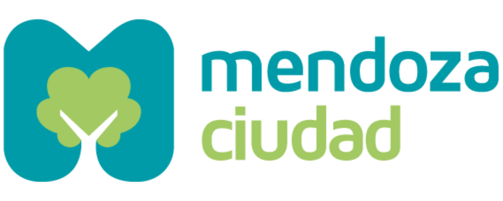

Inteligencia Artificial
Incorporamos modelos de lenguaje, visión computacional y automatización para agilizar trámites, asistir a la ciudadanía y apoyar la toma de decisiones dentro del municipio.
Conocé nuestro agente
Equipos de datos, diseño, desarrollo y políticas públicas trabajando juntos para que cada solución responda a un problema real de la ciudad.
Creamos herramientas basadas en datos, inteligencia artificial, sensores y plataformas digitales para anticipar necesidades, resolver problemas y construir una ciudad más sostenible.
Conocé nuestro trabajoConocé nuestro equipo
Un grupo multi-diciplinario
llevando la ciudad de mendoza al mundo.
Nuestra estrategia combina la exploración de nuevas tecnologías con su aplicación en casos de uso concretos.
A partir del análisis de datos, la innovación y el desarrollo tecnológico , creamos productos que mejoran tanto los procesos internos de la administración como la experiencia cotidiana de la ciudadanía.
Transparencia, datos y participación para una ciudad que se gobierna con su gente.
membresías
02
Certificación
02
reconocimientos
06
cooperaciones
07